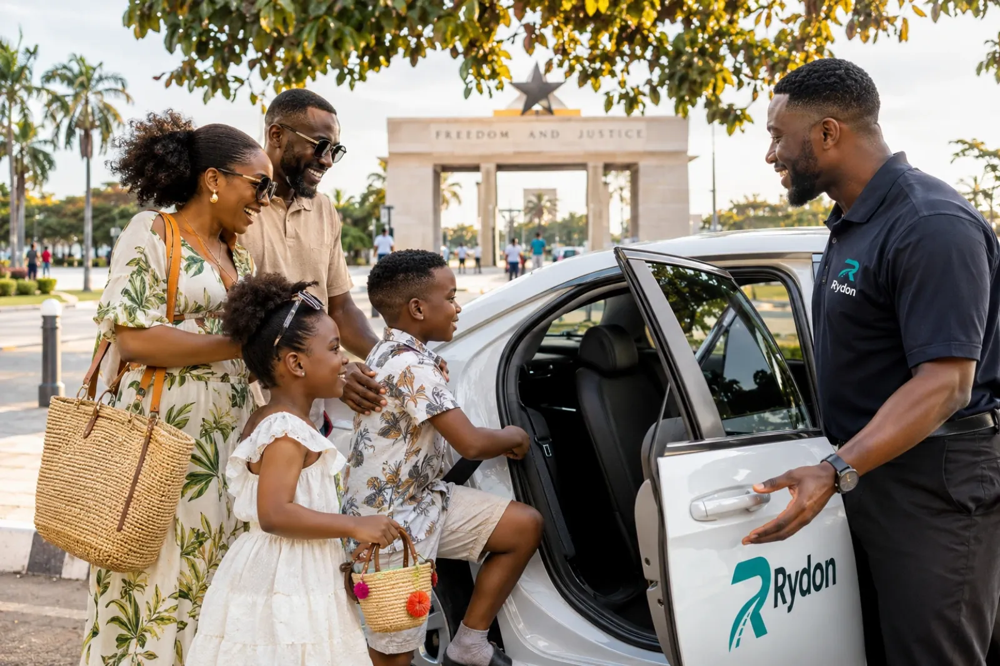
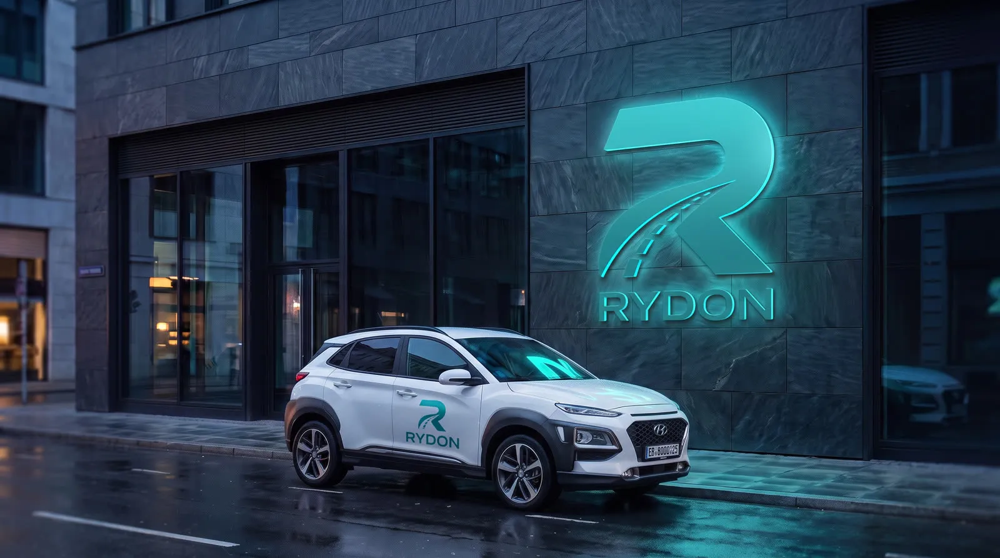

Rydon is Ghana's own ride-sharing and food-delivery platform — created to move people and meals the way our cities actually work, and to keep more of every fare in Ghanaian hands.

For too long, Ghanaians relied on apps designed somewhere else and adapted for here as an afterthought — taking a large cut from drivers and treating Mobile Money as optional. We built Rydon the other way around: MoMo-first, driver-fair, and shaped by how people really move from Accra to Kumasi, Takoradi to Tamale.
Today Rydon brings rides and food delivery together in one app, so getting across town or getting dinner home is simple, affordable and proudly local.
Drivers keep 90% of every fare. When drivers do well, everyone moves better.
Ghanaian-owned, locally supported, and built around Mobile Money and our own roads.
Verified drivers, live tracking and in-app SOS on every single trip.
Our values draw on the timeless symbols of Ghanaian wisdom.
Learning from the past to move Ghana forward.
Leading the way for ride-hailing made in Ghana.
Strong service, with a humble heart.
Built for every twist of the Ghanaian road.
Proudly Ghanaian-owned and independent.
Whether you ride, drive or deliver — there's a place for you at Rydon.